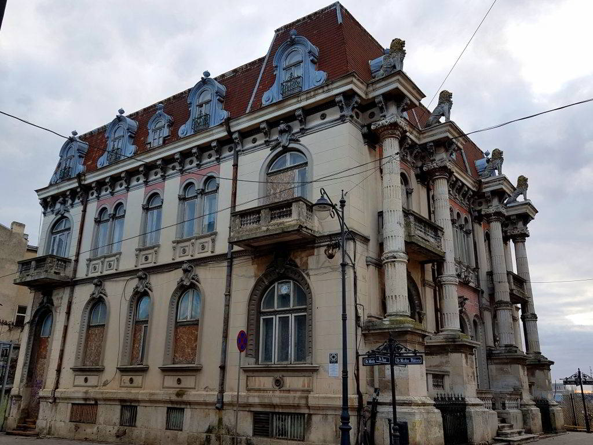

Sunt multe povestiri despre Casa cu lei, un edificiu din zona veche a Constanței, pe care îl îndrăgim cu toții, unele sunt cu perdea, altele fără. Am aflat însă de la criticul de artă Doina Păuleanu, care este povestea sa preferată în legătură cu imobilul de patrimoniu din orașul de la malul mării. Este frumoasă, are legătură cu meseria ei și poate mulți dintre voi nu o știu, așa că o s-o las aici pentru cei interesați.
 ”Casa cu lei i-a aparținut unui armean bogat, Dicran Emirzian, care avea un magazin denumit ”La Louvre”. Cum altfel putea să se numească? La parterul acestei case a locuit multă vreme Lazăr Munteanu, unul dintre cei mai mari colecționari ai țării. El era nepotul fraților Kalinderu, nume mari în cultura românească și era un mare colecționar nu numai prin vocație, dar și prin cultură. Lazăr Munteanu a fost unul dintre cei mai fini cunoscători ai obiectelor minunate pe care le poți găsi oriunde în lume și le-a achiziționat atât în lungile sale călătorii, cât și în timpul șederii în România și la Constanța, unde își adusese colecția.Krikor a făcut liceul în București și îi plăcea să aibă o viață boemă. Participa la expozițiile de artă, mergea la festivitățile de la Ateneu, era un împătimit al muzicii clasice, preferații săi fiind compozitorii germani Beethoven și Wagner. Primele două piese din viitoarea lui colecție impresionantă le-a achiziționat la vârsta de 16 ani și au fost o cromolitografie intitulată Beethoven și o mască din ghips în care era reprezentat acesta.
Ulterior a început să cumpere tot mai multe lucrări, cu ocazia expozițiilor de pictură care se organizau în Constanța, iar la vârsta de 17 ani i-a venit ideea să achiziționeze tablouri de Nicolae Grigorescu, Nicolae Vermont sau Arthur Verona.
Nepotul său, Marcel Zambaccian, povestea despre Krikor că devenise maniac și a ajuns să iubească tablourile mai mult decât propria familie. Dacă trebuia să aleagă între a da un tablou la care ținea foarte mult sau a-și tăia degetele de la mână, prefera să rămână fără degete, spunea Marcel. Iar totul a pornit de la tablourile dintr-o într-o colecție expusă pe pereții Casei cu lei din Constanța.